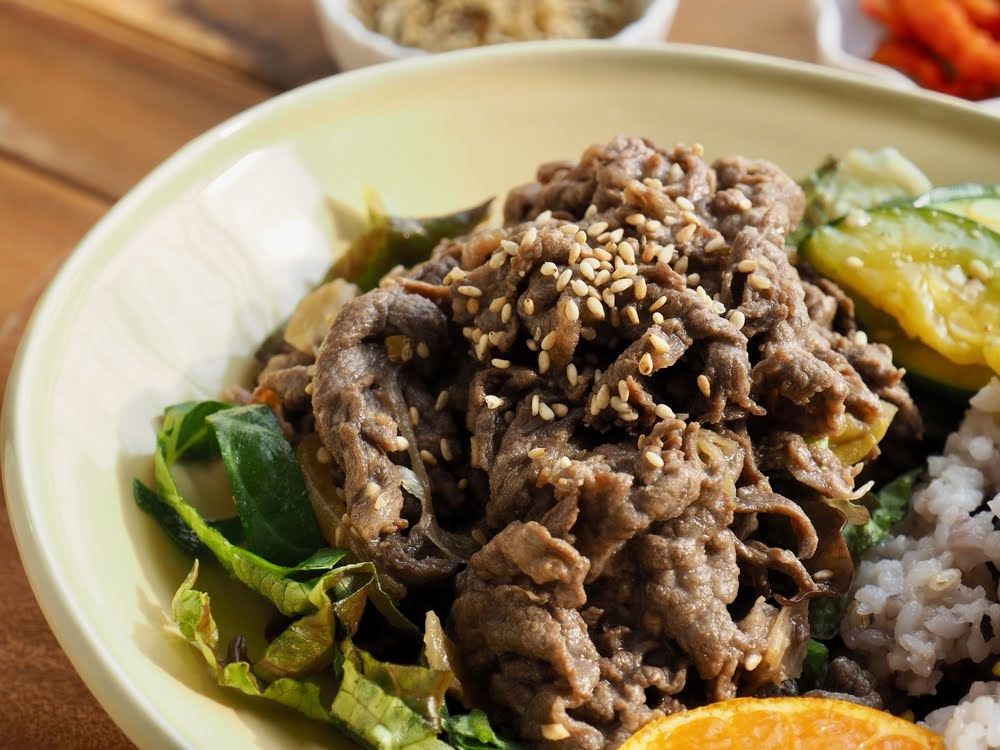

El bulgogi (불고기) es uno de los platos que más gusta a los coreanos. A grandes rasgos, consiste en carne de ternera marinada y servida “a la piedra”, es decir sobre una superficie o sartén de piedra o hierro muy caliente. El nombre de esta receta viene de la combinación de las palabras “fuego” (bul) y “carne” (gogi), haciendo referencia al recipiente en el que se sirve a alta temperatura. El bulgogi es una receta con más de mil años de historia y que se preparaba para la realeza coreana durante la dinastía Joseon. Hoy en día, es tan popular, que podemos encontrar incluso hamburguesas de bulgogi en los establecimientos de comida rápida coreanos.
Bulgogi
Ingredientes
-
700 gramos carne de ternera
-
Media pera
-
2 cda salsa de soja
-
2 cda aceite de sésamo
-
3 dientes ajo
-
1 cucharilla jengibre fresco rallado
-
1 cda pasata de chile coreano (gochujang)
-
2 cucharillas azúcar moreno
-
1 cda aceite vegetal (no aceite de oliva)
-
1 cebolleta
-
Semillas de sésamo
Preparación
Con todos los ingredientes desplegados en la cocina y a mano, vamos a ponernos el mantel y a ensuciarnos las manos y ver cómo preparar la receta del bibimbap paso por paso:
-
En primer lugar, envolvemos la carne en papel transparente o papel film y la guardamos en el congelador durante 30 minutos. Así, podremos cortarla en tiras muy finitas.
-
En un cuenco o bol mezclamos la media pera troceada, los tres ajos picados, una cucharadita de jengibre picado y el gochujang al gusto. A esto le añadimos media taza de salsa de soja, dos cucharaditas de azúcar moreno y dos cucharadas grandes de aceite de sésamo. No es necesario, pero si se quiere se puede batir la mezcla.
-
En un cuenco o bol mezclamos la media pera troceada, los tres ajos picados, una cucharadita de jengibre picado y el gochujang al gusto. A esto le añadimos media taza de salsa de soja, dos cucharaditas de azúcar moreno y dos cucharadas grandes de aceite de sésamo. No es necesario, pero si se quiere se puede batir la mezcla.
-
En una sartén de hierro, añadimos una cuchara grande de aceite vegetal y calentamos a fuego medio-alto. Introducimos la carne y cocinamos bien, dándole la vuelta a la carne para que no se queme. Con 2 o 3 minutos será suficiente.
-
Servimos mientras aún está caliente y podemos adornarlo con las semillas de sésamo y algunas rodajas de la parte verde de la cebolleta.
Servimos mientras aún está caliente y podemos adornarlo con las semillas de sésamo y algunas rodajas de la parte verde de la cebolleta.